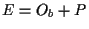
, where
Site-specific recombination affects the topology of circular DNA substrates. These changes in topology can be characterized experimentally. Based on the experimental data, biological models for enzymatic mechanisms can be proposed. In general a few mechanisms are envisioned in the lab. But, how would we know that there are no other possible models that would also account for the experimental data? Only a mathematical treatment of this problem can give a definite answer. In this chapter we introduce the tools from the fields of Knot Theory and Low Dimensional Topology that will be needed to analyze site-specific recombination reactions.
This section introduces basic definitions and results about knots that will be used throughout our work.
Take a piece of string, tie any number of knots in it, and glue the ends together. Neglecting the thickness of the string, we have our intuitive definition of a knot. More formally, a knot is a simple closed curve embedded in 3-space. A link is a disjoint union of such simple closed curves. We say that two knots A and B are equivalent if and only if A can be smoothly deformed into B. If A and B are equivalent, we say A = B.
A knot that can be deformed to lie on a plane, with no crossings, is called a trivial knot, or the unknot. Likewise, a trivial link with two components consists of two circles that can be deformed to lie flat on a plane.
Lay a knot on a plane, and note the positions where one string crosses over or under the other. This leads to a 2-dimensional representation of a 3-dimensinal knot. We call this a projection of a knot. Count the number of crossings in a projection of a knot. The crossing number of a knot is the minimum number of crossings over all projection of a knot. For example, the crossing number of a trefoil knot is 3.
The problem of deciding when two knots or links are equivalent is not easy. Many invariants of knots and links, both geometric and algebraic, have been developed throughout the years. Some examples of geometric invariants are the crossing number of a link, and the linking number of a link with two oriented components.
The following definitions will lead to another knot invariant.
Let K be a link with a fixed orientation. The link obtained after inverting the orientation of K is denoted by (-K), and it is called the inverse of K. Likewise, the link obtained by reflection of K with respect to a plane, is denoted by K* and called the mirror image of K. If K = (-K), then K is said to be invertible. K is achiral if K = K*. If K � K*, K is said to be chiral.
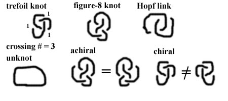
Consider the unit ball in 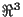
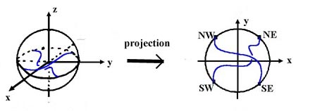
As is the case for knots, tangles are also studied through their projections. A tangle diagram is the image of the 2-string tangle when it is projected onto the equatorial disc. Two tangle diagrams represent equivalent tangles if strandss of the one can be deformed into strands of the other.
There are 3 types of tangles:
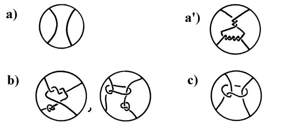
Given two tangles A and B, the tangle addition A + B is defined in the figure below. The resulting object A + B is obtained by gluing NE of A to NW of B, and SE of A to SW of B. Note that the sum of two tangles is not always a tangle since the strands of (A + B) can include a simple closed curve.
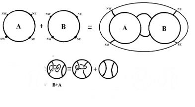
The figure below is used to define two other tangle operations called numerator and denominator. Given a tangle A, these operations are denoted by N(A) and D(A), respectively, and they prduce knots and 2-component links. N(A+B) and D(A+B) can be defined in a similar way. Note that if A+B is not a 2-string tangle then the result of N(A+B) or D(A+B) can be a link of more than two components.
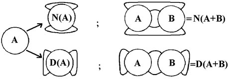
Canonical form of rational tangles. At the bottom are represented the four exceptions.
A 4-plat is a knot or link that admits a representation that consists of a braid on 4 strings closed up as in figure below.
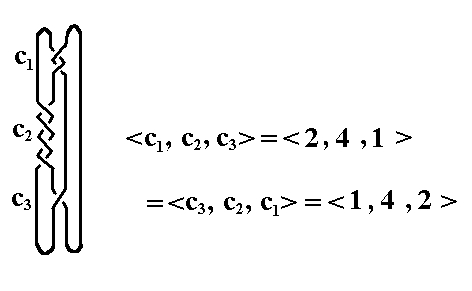
The classification of 4-plats shows that each 4-plat K is characterized by a vector <c1,c2,..,c2n+1> with an odd number of positive integer entries and, such that, c1 and c2n+1 are different from zero. A rational number is assigned, by means of the following continued fraction calculation, to each vector:
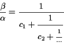
The link K is denoted 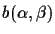
4-plats are classifed as follows:
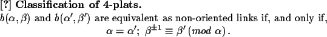
The tangle model was first introduced by De Witt Sumners in the eighties [T7]. In 1990 Ernst and Sumners used the model to analyze the Tn3 resolvase site-specific recombination system [T2]. They proved mathematically that, in a processive recombination event, Tn3 resolvase binds to its unknotted, negatively supercoiled substrate (sites in direct repeat), fixes three negative supercoils, and each round of recombination introduces a positive crossing in the domain. It was also proved that, given biologically reasonable assumptions, this is the only possible explanation for the experimental data. In this section we describe the tangle model and review all its assumptions for both processive and non-processive recombination.
The main goal when doing tangle analysis of experimental data arising from site-specific recombination reactions is to understand the enzymatic mechanism. The tangle model studies topological changes in DNA caused by the enzymes. The mechanism of recombinases involves local interaction of two DNA strands.
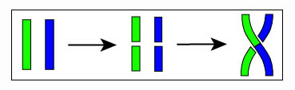
One of the goals of the tangle model is to compute the topology of the synaptosome (enzyme + bound DNA), before and after the enzymatic action. In an attempt to translate an enzymatic action into the language of mathematical 2-string tangles, consider the DNA substrate molecule with its two recombination sites as an embedding of one or more circles in 3-space. Therefore the DNA substrate is seen as a knot or a link. Each circular DNA molecule is represented by the axis of its double-helix (a simple closed curve in ). A single event of recombination consists of two movements. A global movement where, by ambient isotopy of , the recombination sites are juxtaposed inside a ball. The ball represents the enzyme, together with any accessory protein(s) that bind the DNA substrate and are required for recombination. The ball with the two strands of bound DNA represent, by definition, the local synaptic complex (or synaptosome). The second movement is a local movement in the interior of the ball where two strands are cut at the recombination sites, and then recombined. At this stage, the part of the knot or link that was left in the exterior of the ball remains fixed. Mathematically, the ball divides the space into two regions. Each region will be defined based on its biological role.
A ball with two embedded strands is, by definition, a 2-string tangle. Therefore the enzyme with the accessory proteins and the bound DNA form a 2-string tangle, where the proteins form the ball that defines the tangle. Call this tangle E. Likewise, the recombination sites can be surrounded by a small ball in the interior of E. Let P be this tangle in the interior of E where the DNA is cut by the enzyme. This description is illustrated in the following figure .
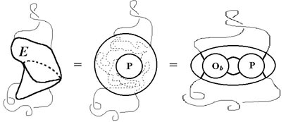
Tangle Model and Assumption number 1. In a site-specific recombination reaction, the
recombinase and accessory proteins bind to the DNA. Enzyme and
proteins are modelled as a ball, the circular DNA is modelled as
a knot or link that intersects the ball in two strands. The
synaptosome is a 2-string tangle called E. E can be seen as the
sum of two tangles, 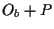
The formulation of the model requires a few assumptions.
Assumption 1:  contains all the DNA that is bound to
the enzyme or to the accessory proteins, except for the
recombination sites that are contained in P.
contains all the DNA that is bound to
the enzyme or to the accessory proteins, except for the
recombination sites that are contained in P.
Let 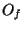 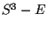 and remain unchanged upon
recombination. contains all the relevant topological
information from the free DNA. Assumption 1 allows to see the
whole synaptic complex simply as:
and remain unchanged upon
recombination. contains all the relevant topological
information from the free DNA. Assumption 1 allows to see the
whole synaptic complex simply as:
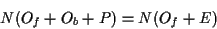
Note that both 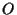 and remain unchanged upon recombination. Let
and remain unchanged upon recombination. Let
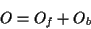
In the calculations one will usually refer to
the tangle
instead of 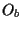 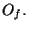 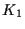
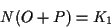
Recombination occurs during the local movement,
and strand exchange is restricted to the tangle P. This
motivates the second mathematical assumption. Assumption 2:
The recombinase action corresponds to a tangle surgery where
the tangle P is changed by the tangle R. With
this assumption, after one round of recombination leading a
knotted or linked product of type 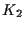
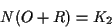
Therefore, one round of
recombination action is translated to the following system with
two tangle equations:
where 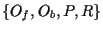 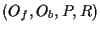 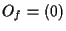 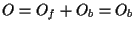 . For unknotted substrates it can generally be
deduced that
. For unknotted substrates it can generally be
deduced that  is rational, in particular,
is rational, in particular,
When the tangle model was used to study the Tn3 resolvase system [T2], the following assumption was crucial to unveil the enzymatic mechanism:
Assumption 3 : The recombination mechanism is constant, independent of the geometry (supercoiling) and topology (knotting and linking) of the substrate population.
This means, in part, that the recombination is
restricted to the interior of the ball, and that the substrate's
configuration outside the ball remains fixed during this event.
It also implies that both P and R are constant,
they do not depend on the nature of neither substrate nor product
of recombination, and they are characteristic of the enzyme. Any
change in the substrate would be translated into a change in the
tangle O (in particular a change in ). It follows
from Assumption 3 that the tangles 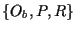 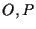 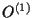 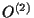 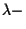
Processive recombination must be incorporated
to the tangle model without contradicting the assumption of
constant mechanism. Since P is assumed to be changed by R
upon one round of recombination, R will be assumed to go
to 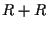
Assumption 4: Processive
recombination acts by tangle addition (see Figure ). The
implication is that, after n rounds of processive recombination,
the post-recombination synaptosome is 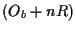
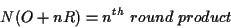
In the tangle analysis of Tn3 resolution [T2] and in that of Gin inversion [T4], data arising from the first few (three or four) rounds of recombination is enough to find unique solutions to the tangle equations. In addition, these computations correctly predict the products of additional rounds of processive recombination.
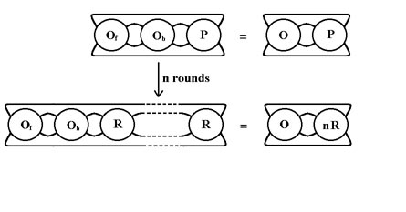
The tangle model for processive site-specific recombination. This figure illustrates the tangle model's assumptions 2, 3 and 4 for processive recombination.
There are other parameters involved in tangle
analysis that can be taken in consideration to ease the
calculations. This section contains an overview of these factors.
P is by definition a small ball in the
interior of 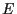 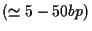 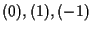 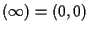 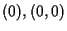 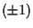 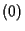 is the only possibility in
order to model processive recombination by tangle addition. If
there is no processive recombination, then any choice of P
among the tangles
is the only possibility in
order to model processive recombination by tangle addition. If
there is no processive recombination, then any choice of P
among the tangles
Once P is determined, a framework is
established where the other tangles can be defined.
Recapitulating, the tangle model sees the
circular DNA substrate and products as knots or links. The
site-specific recombinase and its accessory proteins are seen as
a ball that intersects the DNA knot or link in two strands. The
interior of the ball is divided in two regions. One of them is
restricted to strand exchange and corresponds to a parental
tangle P. This tangle can be chosen to be . P represents the only region in
the synaptic complex that changes upon recombination. The region
outside P but inside the ball, called  , traps all the conformation that, together with the
change from P to R, determines the topology of
the recombination products. Finally, the region outside the ball,
, detects the variation between substrates with
different topology. The tangle model assumes that the synaptic
complex can be expressed as where is called the outside
tangle. Recombination is modelled by a tangle surgery that
replaces P by the recombinant tangle R, thus
leading a product equation . The assumption of constant mechanism implies that P
and R are constants uniquely determined by the enzyme. In
the cases when there is both topological selectivity and
specificity (e.g. Tn3 resolvase, Gin, Xer ), the tangle is also
determined uniquely by both the enzyme and the topology of the
substrate. If there is no topological selectivity (e.g. Int, mutant Gin and FLP) then, for a fixed substrate,
P and R are constant but can vary. Furthermore,
processive recombination is modeled by tangle addition. A
recombination event that consists of n-rounds of processive
recombination is translated into a system of equations with
unknowns , P and R. The tangle is allowed to change from one equation to another if
and only if there is no topological selectivity. This introduces
more unknowns to the system, and the analysis becomes much more
difficult. It was seen in Chapter 3 that solutions for a system
of three tangle equations with three unknowns can be found if the
unknowns are rational tangles. It was also seen that detecting
rationality is not an easy task. In the next two chapters we will
undertake the tangle analysis of two different site-specific
recombination systems: Gin and Xer. Both of these systems have
topological selectivity and specificity, Gin undergoes processive
recombination and Xer does not. At the end of the chapter on Gin
recombination we also analyze data arising from processive
recombination by a mutant of Gin that has lost its topological
selectivity. In this case it is shown that the outside tangles
must vary for different events with same substrates.
, traps all the conformation that, together with the
change from P to R, determines the topology of
the recombination products. Finally, the region outside the ball,
, detects the variation between substrates with
different topology. The tangle model assumes that the synaptic
complex can be expressed as where is called the outside
tangle. Recombination is modelled by a tangle surgery that
replaces P by the recombinant tangle R, thus
leading a product equation . The assumption of constant mechanism implies that P
and R are constants uniquely determined by the enzyme. In
the cases when there is both topological selectivity and
specificity (e.g. Tn3 resolvase, Gin, Xer ), the tangle is also
determined uniquely by both the enzyme and the topology of the
substrate. If there is no topological selectivity (e.g. Int, mutant Gin and FLP) then, for a fixed substrate,
P and R are constant but can vary. Furthermore,
processive recombination is modeled by tangle addition. A
recombination event that consists of n-rounds of processive
recombination is translated into a system of equations with
unknowns , P and R. The tangle is allowed to change from one equation to another if
and only if there is no topological selectivity. This introduces
more unknowns to the system, and the analysis becomes much more
difficult. It was seen in Chapter 3 that solutions for a system
of three tangle equations with three unknowns can be found if the
unknowns are rational tangles. It was also seen that detecting
rationality is not an easy task. In the next two chapters we will
undertake the tangle analysis of two different site-specific
recombination systems: Gin and Xer. Both of these systems have
topological selectivity and specificity, Gin undergoes processive
recombination and Xer does not. At the end of the chapter on Gin
recombination we also analyze data arising from processive
recombination by a mutant of Gin that has lost its topological
selectivity. In this case it is shown that the outside tangles
must vary for different events with same substrates.